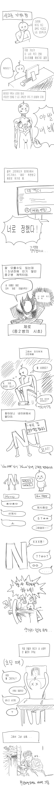
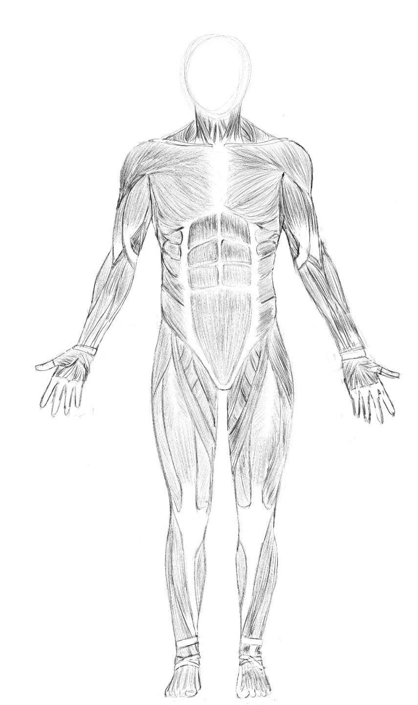
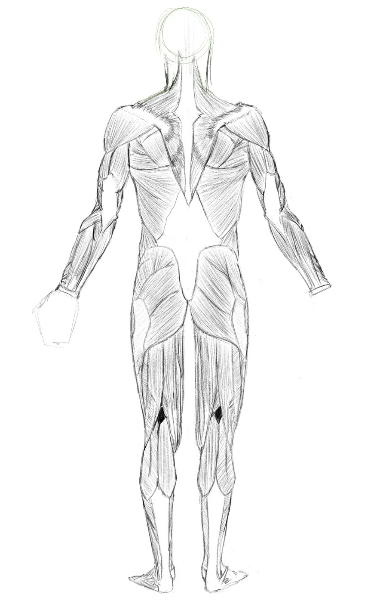
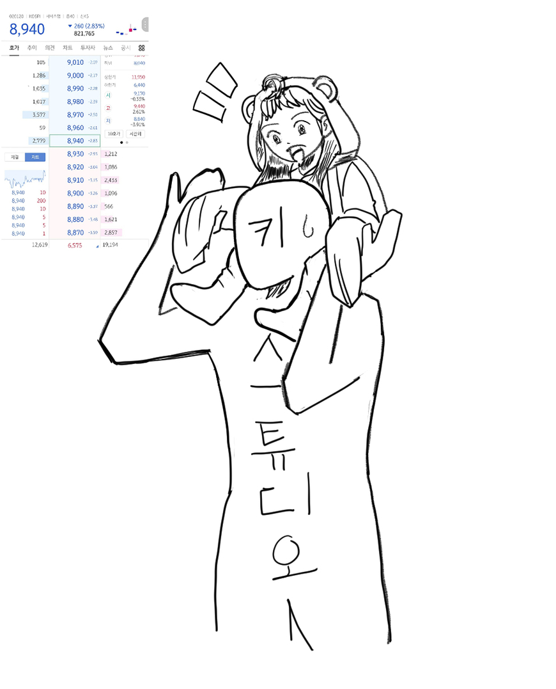

채색 몰라요. 5~6시간은 그린 것 같아요. 교수님 만신이에요. 재미없는거 알아요. 다음 편은 더 재밌게 그릴게요. 사기 이야기 있어서 좀 더 나을거에요.
+) 요즘 그린것들


근육 그린 것들입니다. 전면, 후면. 인체 그릴때 도움될거라 하는데 아직 모르겠습니다.

키다리 탄 교수님. 키다리 타셨다길래 그려봤습니다. 채색 모릅니다. 교수님을 너무 미화한 것 같은 느낌이 듭니다. 키다리맨위에 성인 여성이 목마하고 있으면 귀엽지 않을 것 같아서 어린이로 그렸습니다.
후원댓글 19개
댓글 19개 ▼